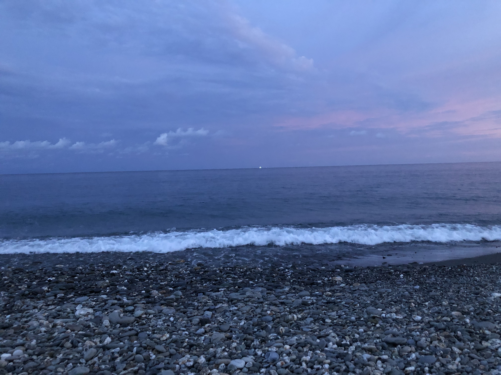
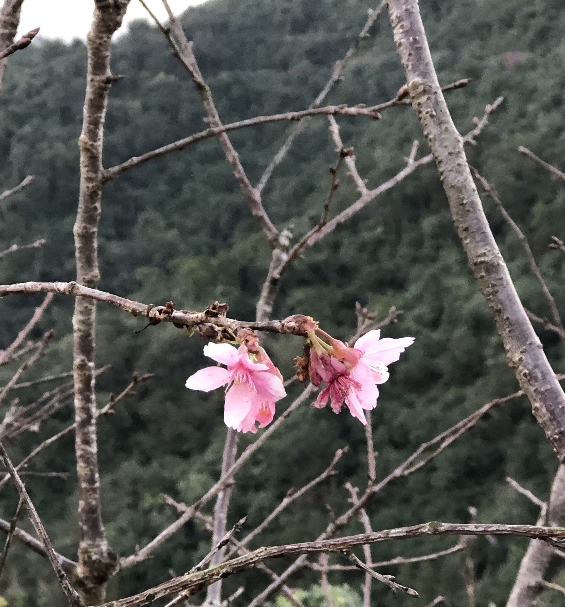

我是吳昱礽，目前就讀金門大學資訊工程學系
我來自高雄市，我喜愛吃東西，尤其是拉麵!!!除了吃東西外，我喜歡看動漫、運動和看小說，而喜歡運動有很大的原因是動漫，我看了閃電十一人，加入國小的足球校隊，看了影子籃球員，開始打籃球，看了疾走王子，加入了國中田徑隊，看了排球少年，開始打排球，看了第一神拳，於是去學了拳擊，但是我雖然喜歡許多運動，但大多數時候，我非常懶得出門。另外我很喜歡漂亮的風景，還有可愛的動物。
下面是我拍的照片，想看更多可以點擊左邊側欄的連結，但目前還沒什麼東西，我可能日後有時間會創建。
